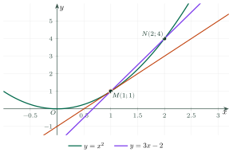
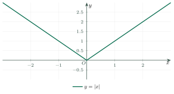
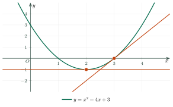

Definition and Meaning of the DerivativeĐịnh nghĩa và ý nghĩa của đạo hàm
Grade 11 · Topic: DerivativesLớp 11 · Chủ đề: Đạo hàm
1Lesson IntroductionGiới thiệu bài học
Learning goalsMục tiêu bài học
By the end of this lesson you can:
Sau bài học này, em có thể:
define the derivative at a point as a limit and compute it from the definition;
phát biểu định nghĩa đạo hàm tại một điểm và tính đạo hàm bằng định nghĩa;
interpret \(f'(x_0)\) as the slope of the tangent and write the tangent equation;
hiểu \(f'(x_0)\) là hệ số góc của tiếp tuyến và viết phương trình tiếp tuyến;
interpret the derivative as an instantaneous rate of change (velocity, marginal cost);
hiểu đạo hàm là tốc độ thay đổi tức thời (vận tốc tức thời, chi phí biên);
recognise points where a function has no derivative.
nhận biết điểm mà hàm số không có đạo hàm.
2Mathematical VocabularyTừ vựng Toán học
derivative at a point – the limit \(f'(x_0)=\lim\limits_{x\to x_0}\dfrac{f(x)-f(x_0)}{x-x_0}\), if it is finite.
đạo hàm tại một điểm – giới hạn hữu hạn \(f'(x_0)=\lim\limits_{x\to x_0}\dfrac{f(x)-f(x_0)}{x-x_0}\) (nếu có).
instantaneous velocity – the derivative of the position function: \(v(t_0)=s'(t_0)\).
vận tốc tức thời – đạo hàm của hàm quãng đường: \(v(t_0)=s'(t_0)\).
average velocity – distance travelled divided by time: \(\dfrac{s(t)-s(t_0)}{t-t_0}\).
vận tốc trung bình – quãng đường chia cho thời gian: \(\dfrac{s(t)-s(t_0)}{t-t_0}\).
marginal cost – the derivative \(C'(x)\) of the cost function; approximately the cost of one more item.
chi phí biên – đạo hàm \(C'(x)\) của hàm chi phí; xấp xỉ chi phí làm thêm một sản phẩm.
3Useful English PhrasesCụm từ tiếng Anh thường gặp
The secant line turns into the tangent line.
Cát tuyến dần trở thành tiếp tuyến.
The derivative is the slope of the tangent.
Đạo hàm là hệ số góc của tiếp tuyến.
The instantaneous velocity at two seconds is twenty metres per second.
Vận tốc tức thời tại giây thứ hai là 20 m/s.
Let h tend to zero.
Cho h dần tới 0.
The graph has a corner, so there is no derivative there.
Đồ thị có góc nhọn nên tại đó không có đạo hàm.
4Prerequisite ReviewÔn tập kiến thức nền
From Chapter V: \(\lim\limits_{x\to x_0}\), removing the factor \(x-x_0\) in \(\frac00\) limits. From Grade 10: a line with slope \(k\) through \((x_0;y_0)\) is \(y=k(x-x_0)+y_0\).
Từ Chương V: giới hạn \(\lim\limits_{x\to x_0}\), khử dạng \(\frac00\) bằng cách rút gọn nhân tử \(x-x_0\). Từ lớp 10: đường thẳng hệ số góc \(k\) qua \((x_0;y_0)\) là \(y=k(x-x_0)+y_0\).
5TheoryLý thuyết
5.1 Two problems that lead to the derivativeHai bài toán dẫn đến khái niệm đạo hàm
Velocity and slopeVận tốc và hệ số góc
Velocity. A stone falls with \(s(t)=4{,}9t^2\) (m). On \([2;t]\) its average velocity is \(\dfrac{s(t)-s(2)}{t-2}=4{,}9(t+2)\). As \(t\to2\) this tends to \(19{,}6\) m/s: the instantaneous velocity at \(t=2\).
Vận tốc. Một hòn đá rơi tự do với \(s(t)=4{,}9t^2\) (m). Trên \([2;t]\), vận tốc trung bình là \(\dfrac{s(t)-s(2)}{t-2}=4{,}9(t+2)\). Khi \(t\to2\), giá trị này dần tới \(19{,}6\) m/s: vận tốc tức thời tại \(t=2\).
Slope. The secant line through \(M(x_0;f(x_0))\) and \(N(x;f(x))\) has slope \(\dfrac{f(x)-f(x_0)}{x-x_0}\). As \(N\to M\) the secant turns into the tangent at \(M\).
Hệ số góc. cát tuyến qua \(M(x_0;f(x_0))\) và \(N(x;f(x))\) có hệ số góc \(\dfrac{f(x)-f(x_0)}{x-x_0}\). Khi \(N\to M\), cát tuyến dần tới tiếp tuyến tại \(M\).

5.2 DefinitionĐịnh nghĩa đạo hàm tại một điểm
DefinitionĐịnh nghĩa
Let \(y=f(x)\) be defined on \((a;b)\) containing \(x_0\). If the limit \[f'(x_0)=\lim_{x\to x_0}\dfrac{f(x)-f(x_0)}{x-x_0}=\lim_{h\to0}\dfrac{f(x_0+h)-f(x_0)}{h}\] exists and is finite, it is the derivative of \(f\) at \(x_0\). \(h=\Delta x\) is the increment of \(x\), \(\Delta y=f(x_0+h)-f(x_0)\) the increment of \(y\).
Cho hàm \(y=f(x)\) xác định trên \((a;b)\) chứa \(x_0\). Nếu tồn tại giới hạn hữu hạn \[f'(x_0)=\lim_{x\to x_0}\dfrac{f(x)-f(x_0)}{x-x_0}=\lim_{h\to0}\dfrac{f(x_0+h)-f(x_0)}{h}\] thì giới hạn đó là đạo hàm tại một điểm của \(f\) tại \(x_0\). \(h=\Delta x\) là số gia của biến, \(\Delta y=f(x_0+h)-f(x_0)\) là số gia của hàm số.
Three stepsBa bước tính đạo hàm bằng định nghĩa
Compute \(\Delta y=f(x_0+h)-f(x_0)\).
Tính \(\Delta y=f(x_0+h)-f(x_0)\).
Simplify \(\dfrac{\Delta y}{h}\) (cancel \(h\)).
Rút gọn tỉ số biến thiên \(\dfrac{\Delta y}{h}\) (triệt tiêu \(h\)).
Let \(h\to0\).
Cho \(h\to0\).
Results to rememberKết quả cần nhớ
From the definition: \((c)'=0\), \((x)'=1\), \((x^2)'=2x\), \((x^3)'=3x^2\), \(\left(\dfrac1x\right)'=-\dfrac1{x^2}\), \((\sqrt x)'=\dfrac1{2\sqrt x}\). The function \(x\mapsto f'(x)\) is the derivative function.
Từ định nghĩa: \((c)'=0\), \((x)'=1\), \((x^2)'=2x\), \((x^3)'=3x^2\), \(\left(\dfrac1x\right)'=-\dfrac1{x^2}\), \((\sqrt x)'=\dfrac1{2\sqrt x}\). Hàm số \(x\mapsto f'(x)\) gọi là hàm đạo hàm (gọi tắt là đạo hàm) của \(f\).
5.3 Meaning of the derivativeÝ nghĩa của đạo hàm
Geometric and physical meaningÝ nghĩa hình học và vật lí
Geometry: \(f'(x_0)\) is the slope of the tangent at \(M(x_0;f(x_0))\); the tangent is \(y=f'(x_0)(x-x_0)+f(x_0)\).
Hình học: \(f'(x_0)\) là hệ số góc của tiếp tuyến tại tiếp điểm \(M(x_0;f(x_0))\); phương trình tiếp tuyến: \(y=f'(x_0)(x-x_0)+f(x_0)\).
Physics: \(v(t_0)=s'(t_0)\) (velocity); the current \(I(t_0)=Q'(t_0)\) where \(Q\) is the charge.
Vật lí: \(v(t_0)=s'(t_0)\) (vận tốc tức thời); cường độ dòng điện tức thời \(I(t_0)=Q'(t_0)\) với \(Q\) là điện lượng.
Economics: the marginal cost \(C'(x_0)\) approximates the cost of producing item number \(x_0+1\).
Kinh tế: chi phí biên \(C'(x_0)\) xấp xỉ chi phí sản xuất thêm sản phẩm thứ \(x_0+1\).

Watch out!Lưu ý
If \(f\) has a derivative at \(x_0\) then \(f\) is continuous at \(x_0\). The converse is false (example \(|x|\) at 0).
Nếu \(f\) có đạo hàm tại \(x_0\) thì \(f\) liên tục tại \(x_0\). Điều ngược lại không đúng (ví dụ \(|x|\) tại 0).
6Worked ExamplesVí dụ có lời giải
ExampleVí dụ 1BasicCơ bản – Using the definitionTính đạo hàm bằng định nghĩa
Use the definition to compute \(f'(2)\) for \(f(x)=x^2+3x\).
Dùng định nghĩa tính \(f'(2)\) với \(f(x)=x^2+3x\).
Analysis: Follow the three steps.
Phân tích: Làm theo ba bước.
\(\Delta y=(2+h)^2+3(2+h)-10=7h+h^2\).
\(\Delta y=(2+h)^2+3(2+h)-10=7h+h^2\).
\(\dfrac{\Delta y}{h}=7+h\to7\).
\(\dfrac{\Delta y}{h}=7+h\to7\) khi \(h\to0\).
\(f'(2)=7\).
\(f'(2)=7\).
ExampleVí dụ 2BasicCơ bản – A tangent linePhương trình tiếp tuyến
Write the tangent to \(y=x^3\) at the point with abscissa \(-1\).
Viết phương trình tiếp tuyến của đồ thị \(y=x^3\) tại điểm có hoành độ \(-1\).
Analysis: \((x^3)'=3x^2\).
Phân tích: \((x^3)'=3x^2\).
\(x_0=-1\), \(y_0=-1\), \(f'(-1)=3\).
\(x_0=-1\), \(y_0=-1\), \(f'(-1)=3\).
\(y=3(x+1)-1\).
\(y=3(x+1)-1\).
\(y=3x+2\).
\(y=3x+2\).
ExampleVí dụ 3IntermediateTrung bình – Free fallRơi tự do
A ball is dropped from a 45 m tower; \(s(t)=5t^2\) (m, s; \(g\approx10\)). Find its velocity when it hits the ground.
Thả một quả bóng từ đỉnh tháp cao 45 m; quãng đường rơi \(s(t)=5t^2\) (m, s; lấy \(g\approx10\)). Tính vận tốc của bóng lúc chạm đất.
Analysis: Find the time first, then \(v=s'(t)\).
Phân tích: Tìm thời điểm chạm đất, rồi tính \(v=s'(t)\).
\(5t^2=45\Rightarrow t=3\) s.
\(5t^2=45\Rightarrow t=3\) giây.
\(s'(t)=10t\) (by the definition, as for \(x^2\)); \(v(3)=30\) m/s.
\(s'(t)=10t\) (theo định nghĩa, như với \(x^2\)); \(v(3)=30\) m/s.
\(30\) m/s (\(108\) km/h).
\(30\) m/s (khoảng \(108\) km/h).
ExampleVí dụ 4IntermediateTrung bình – Marginal costChi phí biên
A workshop makes \(x\) chairs at cost \(C(x)=0{,}1x^2+40x+800\) (thousand đồng). Compute \(C'(50)\) and compare with \(C(51)-C(50)\).
Một xưởng sản xuất \(x\) chiếc ghế với chi phí \(C(x)=0{,}1x^2+40x+800\) (nghìn đồng). Tính \(C'(50)\) và so sánh với \(C(51)-C(50)\).
Analysis: \(C'(x)=0{,}2x+40\).
Phân tích: \(C'(x)=0{,}2x+40\).
\(C'(50)=50\) thousand đồng.
\(C'(50)=50\) nghìn đồng.
\(C(51)-C(50)=0{,}1(51^2-50^2)+40=50{,}1\).
\(C(51)-C(50)=0{,}1(51^2-50^2)+40=50{,}1\).
\(C'(50)=50\): the 51st chair costs about 50 thousand đồng.
\(C'(50)=50\): chiếc ghế thứ 51 tốn khoảng 50 nghìn đồng.
ExampleVí dụ 5AdvancedNâng cao – Tangent with a given slopeTiếp tuyến có hệ số góc cho trước
Find the tangents to \(y=x^2-4x+3\) that are parallel to \(y=2x+1\), and the point where the tangent is horizontal.
Viết phương trình tiếp tuyến của \(y=x^2-4x+3\) song song với đường thẳng \(y=2x+1\), và tìm điểm mà tại đó tiếp tuyến nằm ngang.

Analysis: \(f'(x)=2x-4\); parallel lines have equal slopes.
Phân tích: \(f'(x)=2x-4\); hai đường song song có cùng hệ số góc.
\(2x_0-4=2\Rightarrow x_0=3\), \(f(3)=0\): \(y=2(x-3)=2x-6\) (different from \(y=2x+1\)).
\(2x_0-4=2\Rightarrow x_0=3\), \(f(3)=0\): \(y=2(x-3)=2x-6\) (khác đường \(y=2x+1\)).
Horizontal: \(2x_0-4=0\Rightarrow x_0=2\), point \((2;-1)\), the vertex.
Nằm ngang: \(2x_0-4=0\Rightarrow x_0=2\), điểm \((2;-1)\) là đỉnh parabol.
\(y=2x-6\); \((2;-1)\).
\(y=2x-6\); \((2;-1)\).
7PracticeBài tập luyện tập
A. Multiple ChoiceA. Trắc nghiệm nhiều lựa chọn
By definition, for \(f(x)=x^2-3x\), \(f'(4)=\)…
Dùng định nghĩa, với \(f(x)=x^2-3x\) thì \(f'(4)=\)…
Answer: a. \(\dfrac{\Delta y}{h}=2ax_0+b+ah\).
Đáp án a. \(\dfrac{\Delta y}{h}=5+h\to5\).
The tangent to \(y=x^3\) at the point with abscissa \(1\) is…
Tiếp tuyến của đồ thị \(y=x^3\) tại điểm có hoành độ \(1\) là…
Answer: a. \(y=3x_0^2(x-x_0)+x_0^3\).
Đáp án a. \(f'(1)=3\), \(f(1)=1\): \(y=3(x-(1))+(1)\).
An object moves with \(s(t)=5t^2\) (m, s). Its instantaneous velocity at \(t=2\) is…
Một vật chuyển động theo \(s(t)=5t^2\) (m, s). Vận tốc tức thời tại \(t=2\) là…
Answer: d. \(v=s'(t)=10t\).
Đáp án d. \(v(t)=s'(t)=10t\); vận tốc trung bình trên \([2;3]\) là \(25\) m/s, khác vận tốc tức thời.
B. True or FalseB. Đúng hoặc sai
If \(f'(x_0)=0\), the tangent at \(x_0\) is horizontal.
Nếu \(f'(x_0)=0\) thì tiếp tuyến tại điểm có hoành độ \(x_0\) song song hoặc trùng với trục \(Ox\).
Recall the geometric meaning.
Nhớ lại ý nghĩa hình học, mối liên hệ với tính liên tục.
The average velocity on \([2;3]\) always equals the instantaneous velocity at \(t=2\).
Vận tốc trung bình trên \([2;3]\) luôn bằng vận tốc tức thời tại \(t=2\).
Average vs instantaneous.
Phân biệt tốc độ trung bình và tức thời.
C. Short AnswerC. Trả lời ngắn
Find the slope of the tangent to \(y=x^3-2x+1\) at \(x=2\).
Tìm hệ số góc của tiếp tuyến của đồ thị \(y=x^3-2x+1\) tại điểm có hoành độ \(x=2\).
Enter a number.
Nhập một số.
\(f'(x)=3x^2-2\).
\(f'(x)=3x^2-2\), \(f'(2)=10\).
Cost \(C(x)=\dfrac{1}{10}\,x^2+30x+1000\) (thousand đồng). Find the marginal cost \(C'(100)\).
Chi phí \(C(x)=\dfrac{1}{10}\,x^2+30x+1000\) (nghìn đồng) khi sản xuất \(x\) sản phẩm. Tính chi phí biên \(C'(100)\).
Enter a number.
Nhập một số.
\(C'(x)=2ax+b\).
\(C'(x)=\dfrac{1}{5} x+30\), \(C'(100)=50\).
A. Multiple ChoiceA. Trắc nghiệm nhiều lựa chọn
By definition, for \(f(x)=2x^2+x\), \(f'(-1)=\)…
Dùng định nghĩa, với \(f(x)=2x^2+x\) thì \(f'(-1)=\)…
Answer: b. \(\dfrac{\Delta y}{h}=2ax_0+b+ah\).
Đáp án b. \(\dfrac{\Delta y}{h}=-3+2h\to-3\).
The tangent to \(y=x^3\) at the point with abscissa \(-1\) is…
Tiếp tuyến của đồ thị \(y=x^3\) tại điểm có hoành độ \(-1\) là…
Answer: a. \(y=3x_0^2(x-x_0)+x_0^3\).
Đáp án a. \(f'(-1)=3\), \(f(-1)=-1\): \(y=3(x-(-1))+(-1)\).
An object moves with \(s(t)=4t^2\) (m, s). Its instantaneous velocity at \(t=3\) is…
Một vật chuyển động theo \(s(t)=4t^2\) (m, s). Vận tốc tức thời tại \(t=3\) là…
Answer: d. \(v=s'(t)=8t\).
Đáp án d. \(v(t)=s'(t)=8t\); vận tốc trung bình trên \([3;4]\) là \(28\) m/s, khác vận tốc tức thời.
B. True or FalseB. Đúng hoặc sai
If \(f\) is continuous at \(x_0\) then \(f\) has a derivative at \(x_0\).
Nếu \(f\) liên tục tại \(x_0\) thì \(f\) có đạo hàm tại \(x_0\).
Recall the geometric meaning.
Nhớ lại ý nghĩa hình học, mối liên hệ với tính liên tục.
If \(f'(x_0)\gt0\), the tangent at \(x_0\) goes up from left to right.
Nếu \(f'(x_0)\gt0\) thì tiếp tuyến tại \(x_0\) đi lên từ trái sang phải.
Average vs instantaneous.
Phân biệt tốc độ trung bình và tức thời.
C. Short AnswerC. Trả lời ngắn
Find the slope of the tangent to \(y=x^3+x-4\) at \(x=-1\).
Tìm hệ số góc của tiếp tuyến của đồ thị \(y=x^3+x-4\) tại điểm có hoành độ \(x=-1\).
Enter a number.
Nhập một số.
\(f'(x)=3x^2+1\).
\(f'(x)=3x^2+1\), \(f'(-1)=4\).
Cost \(C(x)=\dfrac{1}{5}\,x^2+50x+1000\) (thousand đồng). Find the marginal cost \(C'(40)\).
Chi phí \(C(x)=\dfrac{1}{5}\,x^2+50x+1000\) (nghìn đồng) khi sản xuất \(x\) sản phẩm. Tính chi phí biên \(C'(40)\).
Enter a number.
Nhập một số.
\(C'(x)=2ax+b\).
\(C'(x)=\dfrac{2}{5} x+50\), \(C'(40)=66\).
A. Multiple ChoiceA. Trắc nghiệm nhiều lựa chọn
By definition, for \(f(x)=-x^2+4x\), \(f'(3)=\)…
Dùng định nghĩa, với \(f(x)=-x^2+4x\) thì \(f'(3)=\)…
Answer: b. \(\dfrac{\Delta y}{h}=2ax_0+b+ah\).
Đáp án b. \(\dfrac{\Delta y}{h}=-2+-1h\to-2\).
The tangent to \(y=x^3\) at the point with abscissa \(2\) is…
Tiếp tuyến của đồ thị \(y=x^3\) tại điểm có hoành độ \(2\) là…
Answer: c. \(y=3x_0^2(x-x_0)+x_0^3\).
Đáp án c. \(f'(2)=12\), \(f(2)=8\): \(y=12(x-(2))+(8)\).
An object moves with \(s(t)=3t^2\) (m, s). Its instantaneous velocity at \(t=4\) is…
Một vật chuyển động theo \(s(t)=3t^2\) (m, s). Vận tốc tức thời tại \(t=4\) là…
Answer: d. \(v=s'(t)=6t\).
Đáp án d. \(v(t)=s'(t)=6t\); vận tốc trung bình trên \([4;5]\) là \(27\) m/s, khác vận tốc tức thời.
B. True or FalseB. Đúng hoặc sai
\(y=|x-1|\) has no derivative at \(x=1\).
Hàm số \(y=|x-1|\) không có đạo hàm tại \(x=1\).
Recall the geometric meaning.
Nhớ lại ý nghĩa hình học, mối liên hệ với tính liên tục.
If \(s(t)\) is the position, \(s'(t_0)\) is the average velocity on \([0;t_0]\).
Nếu \(s(t)\) là quãng đường thì \(s'(t_0)\) là vận tốc trung bình trên \([0;t_0]\).
Average vs instantaneous.
Phân biệt tốc độ trung bình và tức thời.
C. Short AnswerC. Trả lời ngắn
Find the slope of the tangent to \(y=x^3-5x+2\) at \(x=-2\).
Tìm hệ số góc của tiếp tuyến của đồ thị \(y=x^3-5x+2\) tại điểm có hoành độ \(x=-2\).
Enter a number.
Nhập một số.
\(f'(x)=3x^2-5\).
\(f'(x)=3x^2-5\), \(f'(-2)=7\).
Cost \(C(x)=\dfrac{1}{2}\,x^2+20x+1000\) (thousand đồng). Find the marginal cost \(C'(30)\).
Chi phí \(C(x)=\dfrac{1}{2}\,x^2+20x+1000\) (nghìn đồng) khi sản xuất \(x\) sản phẩm. Tính chi phí biên \(C'(30)\).
Enter a number.
Nhập một số.
\(C'(x)=2ax+b\).
\(C'(x)=1 x+20\), \(C'(30)=50\).
D. Self-practice: Multiple ChoiceD. Tự luyện: trắc nghiệm
For \(f(x)=x^2-2x+3\), using the definition, \(f'(-1)=\)…
Cho \(f(x)=x^2-2x+3\). Theo định nghĩa, \(f'(-1)=\)…
Answer: c. \(\lim\limits_{h\to0}\dfrac{f(-1+h)-f(-1)}{h}=2a x_0+b\).
Đáp án c. \(\dfrac{f(x_0+h)-f(x_0)}{h}=2ax_0+b+ah\to 2\cdot1\cdot-1+-2\) khi \(h\to0\).
The slope of the tangent to \(y=x^2\) at the point with abscissa \(-1\) is…
Hệ số góc của tiếp tuyến của đồ thị \(y=x^2\) tại điểm có hoành độ \(-1\) là…
Answer: b. \((x^2)'=2x^{1}\).
Đáp án b. Hệ số góc bằng \(f'(x_0)\) với \((x^2)'=2x\).
The tangent to the parabola \(y=x^2\) at the point \((-1;1)\) is…
Tiếp tuyến của parabol \(y=x^2\) tại điểm \((-1;1)\) có phương trình là…
Answer: c. \(y=f'(x_0)(x-x_0)+f(x_0)\).
Đáp án c. \(y=-2(x-(-1))+1\).
A car moves with \(s(t)=5t^2+9t\) (metres, seconds). Its instantaneous velocity at \(t=3\) is… (m/s)
Một ô tô chuyển động theo phương trình \(s(t)=5t^2+9t\) (\(s\) tính bằng mét, \(t\) bằng giây). Vận tốc tức thời tại \(t=3\) là… (m/s)
Answer: a. \(v(t)=s'(t)\).
Đáp án a. \(v(t)=s'(t)=10t+9\), thay \(t=3\).
The average rate of change of \(f(x)=x^2\) on \([-2;2]\) is…
Tốc độ thay đổi trung bình của \(f(x)=x^2\) trên đoạn \([-2;2]\) là…
Answer: c. \(\dfrac{f(x_2)-f(x_1)}{x_2-x_1}\).
Đáp án c. \(\dfrac{4-4}{2-(-2)}\) (hệ số góc của cát tuyến).
For \(f(x)=\dfrac1x\), \(f'(-2)=\)…
Cho \(f(x)=\dfrac1x\). Khi đó \(f'(-2)=\)…
Answer: b. \(\dfrac{f(x_0+h)-f(x_0)}{h}=\dfrac{-1}{x_0(x_0+h)}\).
Đáp án b. \(\dfrac{f(x_0+h)-f(x_0)}{h}=\dfrac{-1}{x_0(x_0+h)}\to-\dfrac1{x_0^2}\).
The cost of producing \(x\) items is \(C(x)=\dfrac{1}{10}\,x^2+50x+500\) (thousand đồng). The marginal cost \(C'(50)\) is…
Chi phí sản xuất \(x\) sản phẩm là \(C(x)=\dfrac{1}{10}\,x^2+50x+500\) (nghìn đồng). Chi phí biên \(C'(50)\) bằng…
Answer: a. \(C'(x)=2ax+b\).
Đáp án a. \(C'(x)=\dfrac{1}{5} x+50\); chi phí biên xấp xỉ chi phí làm thêm sản phẩm tiếp theo.
For \(f(x)=3x^2+x-2\), using the definition, \(f'(-3)=\)…
Cho \(f(x)=3x^2+x-2\). Theo định nghĩa, \(f'(-3)=\)…
Answer: a. \(\lim\limits_{h\to0}\dfrac{f(-3+h)-f(-3)}{h}=2a x_0+b\).
Đáp án a. \(\dfrac{f(x_0+h)-f(x_0)}{h}=2ax_0+b+ah\to 2\cdot3\cdot-3+1\) khi \(h\to0\).
D. Self-practice: Multiple ChoiceD. Tự luyện: trắc nghiệm
For \(f(x)=3x^2+x+5\), using the definition, \(f'(3)=\)…
Cho \(f(x)=3x^2+x+5\). Theo định nghĩa, \(f'(3)=\)…
Answer: c. \(\lim\limits_{h\to0}\dfrac{f(3+h)-f(3)}{h}=2a x_0+b\).
Đáp án c. \(\dfrac{f(x_0+h)-f(x_0)}{h}=2ax_0+b+ah\to 2\cdot3\cdot3+1\) khi \(h\to0\).
The slope of the tangent to \(y=x^2\) at the point with abscissa \(3\) is…
Hệ số góc của tiếp tuyến của đồ thị \(y=x^2\) tại điểm có hoành độ \(3\) là…
Answer: c. \((x^2)'=2x^{1}\).
Đáp án c. Hệ số góc bằng \(f'(x_0)\) với \((x^2)'=2x\).
The tangent to the parabola \(y=x^2\) at the point \((-2;4)\) is…
Tiếp tuyến của parabol \(y=x^2\) tại điểm \((-2;4)\) có phương trình là…
Answer: b. \(y=f'(x_0)(x-x_0)+f(x_0)\).
Đáp án b. \(y=-4(x-(-2))+4\).
A car moves with \(s(t)=5t^2+6t\) (metres, seconds). Its instantaneous velocity at \(t=4\) is… (m/s)
Một ô tô chuyển động theo phương trình \(s(t)=5t^2+6t\) (\(s\) tính bằng mét, \(t\) bằng giây). Vận tốc tức thời tại \(t=4\) là… (m/s)
Answer: a. \(v(t)=s'(t)\).
Đáp án a. \(v(t)=s'(t)=10t+6\), thay \(t=4\).
The average rate of change of \(f(x)=x^2\) on \([2;3]\) is…
Tốc độ thay đổi trung bình của \(f(x)=x^2\) trên đoạn \([2;3]\) là…
Answer: a. \(\dfrac{f(x_2)-f(x_1)}{x_2-x_1}\).
Đáp án a. \(\dfrac{9-4}{3-(2)}\) (hệ số góc của cát tuyến).
For \(f(x)=\dfrac1x\), \(f'(4)=\)…
Cho \(f(x)=\dfrac1x\). Khi đó \(f'(4)=\)…
Answer: d. \(\dfrac{f(x_0+h)-f(x_0)}{h}=\dfrac{-1}{x_0(x_0+h)}\).
Đáp án d. \(\dfrac{f(x_0+h)-f(x_0)}{h}=\dfrac{-1}{x_0(x_0+h)}\to-\dfrac1{x_0^2}\).
The cost of producing \(x\) items is \(C(x)=\dfrac{1}{10}\,x^2+30x+500\) (thousand đồng). The marginal cost \(C'(20)\) is…
Chi phí sản xuất \(x\) sản phẩm là \(C(x)=\dfrac{1}{10}\,x^2+30x+500\) (nghìn đồng). Chi phí biên \(C'(20)\) bằng…
Answer: d. \(C'(x)=2ax+b\).
Đáp án d. \(C'(x)=\dfrac{1}{5} x+30\); chi phí biên xấp xỉ chi phí làm thêm sản phẩm tiếp theo.
For \(f(x)=-2x^2-4x\), using the definition, \(f'(-2)=\)…
Cho \(f(x)=-2x^2-4x\). Theo định nghĩa, \(f'(-2)=\)…
Answer: b. \(\lim\limits_{h\to0}\dfrac{f(-2+h)-f(-2)}{h}=2a x_0+b\).
Đáp án b. \(\dfrac{f(x_0+h)-f(x_0)}{h}=2ax_0+b+ah\to 2\cdot-2\cdot-2+-4\) khi \(h\to0\).
D. Self-practice: Multiple ChoiceD. Tự luyện: trắc nghiệm
For \(f(x)=-3x^2-2x-2\), using the definition, \(f'(-3)=\)…
Cho \(f(x)=-3x^2-2x-2\). Theo định nghĩa, \(f'(-3)=\)…
Answer: a. \(\lim\limits_{h\to0}\dfrac{f(-3+h)-f(-3)}{h}=2a x_0+b\).
Đáp án a. \(\dfrac{f(x_0+h)-f(x_0)}{h}=2ax_0+b+ah\to 2\cdot-3\cdot-3+-2\) khi \(h\to0\).
The slope of the tangent to \(y=x^2\) at the point with abscissa \(1\) is…
Hệ số góc của tiếp tuyến của đồ thị \(y=x^2\) tại điểm có hoành độ \(1\) là…
Answer: d. \((x^2)'=2x^{1}\).
Đáp án d. Hệ số góc bằng \(f'(x_0)\) với \((x^2)'=2x\).
The tangent to the parabola \(y=x^2\) at the point \((-3;9)\) is…
Tiếp tuyến của parabol \(y=x^2\) tại điểm \((-3;9)\) có phương trình là…
Answer: b. \(y=f'(x_0)(x-x_0)+f(x_0)\).
Đáp án b. \(y=-6(x-(-3))+9\).
A car moves with \(s(t)=3t^2+4t\) (metres, seconds). Its instantaneous velocity at \(t=3\) is… (m/s)
Một ô tô chuyển động theo phương trình \(s(t)=3t^2+4t\) (\(s\) tính bằng mét, \(t\) bằng giây). Vận tốc tức thời tại \(t=3\) là… (m/s)
Answer: c. \(v(t)=s'(t)\).
Đáp án c. \(v(t)=s'(t)=6t+4\), thay \(t=3\).
The average rate of change of \(f(x)=x^2\) on \([1;4]\) is…
Tốc độ thay đổi trung bình của \(f(x)=x^2\) trên đoạn \([1;4]\) là…
Answer: d. \(\dfrac{f(x_2)-f(x_1)}{x_2-x_1}\).
Đáp án d. \(\dfrac{16-1}{4-(1)}\) (hệ số góc của cát tuyến).
For \(f(x)=\dfrac1x\), \(f'(-3)=\)…
Cho \(f(x)=\dfrac1x\). Khi đó \(f'(-3)=\)…
Answer: b. \(\dfrac{f(x_0+h)-f(x_0)}{h}=\dfrac{-1}{x_0(x_0+h)}\).
Đáp án b. \(\dfrac{f(x_0+h)-f(x_0)}{h}=\dfrac{-1}{x_0(x_0+h)}\to-\dfrac1{x_0^2}\).
The cost of producing \(x\) items is \(C(x)=\dfrac{1}{2}\,x^2+20x+500\) (thousand đồng). The marginal cost \(C'(20)\) is…
Chi phí sản xuất \(x\) sản phẩm là \(C(x)=\dfrac{1}{2}\,x^2+20x+500\) (nghìn đồng). Chi phí biên \(C'(20)\) bằng…
Answer: b. \(C'(x)=2ax+b\).
Đáp án b. \(C'(x)=1 x+20\); chi phí biên xấp xỉ chi phí làm thêm sản phẩm tiếp theo.
For \(f(x)=3x^2-4\), using the definition, \(f'(2)=\)…
Cho \(f(x)=3x^2-4\). Theo định nghĩa, \(f'(2)=\)…
Answer: c. \(\lim\limits_{h\to0}\dfrac{f(2+h)-f(2)}{h}=2a x_0+b\).
Đáp án c. \(\dfrac{f(x_0+h)-f(x_0)}{h}=2ax_0+b+ah\to 2\cdot3\cdot2+0\) khi \(h\to0\).
8Common MistakesLỗi thường gặp
Forgetting that \(h\to0\) only at the end. Cancel \(h\) first, then take the limit.
Cho \(h=0\) quá sớm. Phải rút gọn \(h\) trước rồi mới lấy giới hạn.
Using \(f(x_0)\) as the slope. The slope is \(f'(x_0)\); \(f(x_0)\) is the ordinate of the point.
Lấy \(f(x_0)\) làm hệ số góc. Hệ số góc là \(f'(x_0)\); \(f(x_0)\) là tung độ tiếp điểm.
Confusing average and instantaneous velocity.
Nhầm vận tốc trung bình với vận tốc tức thời.
Thinking continuous implies differentiable. \(|x|\) is a counterexample.
Cho rằng liên tục thì có đạo hàm. Hàm \(|x|\) là phản ví dụ.
9Lesson SummaryTổng kết
\(f'(x_0)=\lim\limits_{h\to0}\dfrac{f(x_0+h)-f(x_0)}{h}\).
\(f'(x_0)=\lim\limits_{h\to0}\dfrac{f(x_0+h)-f(x_0)}{h}\).
Tangent: \(y=f'(x_0)(x-x_0)+f(x_0)\).
Tiếp tuyến: \(y=f'(x_0)(x-x_0)+f(x_0)\).
\(v(t)=s'(t)\); marginal cost \(C'(x)\); differentiable \(\Rightarrow\) continuous.
\(v(t)=s'(t)\); chi phí biên \(C'(x)\); có đạo hàm \(\Rightarrow\) liên tục.
Key words: derivative, tangent, slope, instantaneous velocity, marginal cost.
Từ cần nhớ: derivative, tangent, slope, instantaneous velocity, marginal cost.